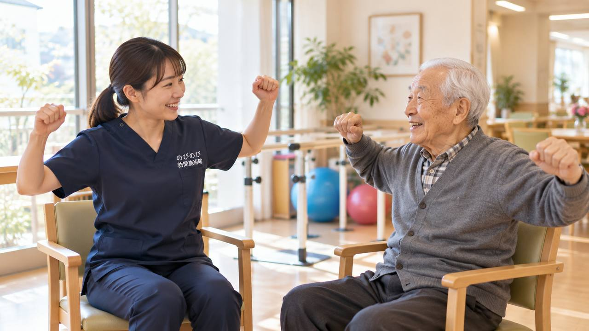

背骨が左右に曲がってきた、片方の肩や腰の高さが違う、背中や腰が痛む、長く座ったり立ったりするとつらい。側弯があると、曲がりの外側の筋肉が引っぱられて張り、内側が縮んで固くなる、というように背中の筋肉のバランスがくずれます。背骨の変形の診断・治療は整形外科などの医師の役割ですが、こわばった背中・腰をゆるめる部分は、ご自宅にうかがう鍼灸・マッサージでお手伝いできます。
この記事のポイント
背骨の変形の診断・治療は整形外科などの医師の役割です。ただ、曲がりによって引っぱられ、こわばった背中・腰の筋肉を和らげ、動かしやすさを支えることは、訪問鍼灸マッサージがお手伝いできます。医師が施術を必要と認め、通院がむずかしい状態なら、はり・きゅうの医療保険の対象になる場合があります。急に曲がりが強まった、足のしびれや力の入りにくさが出たといったときは、まず医療機関を受診してください。
背骨が左右に曲がる、側弯症とは
側弯症は、背骨が左右に曲がり、ねじれをともなうこともある状態です。高齢の方では、背骨や椎間板の変化、筋力の衰えなどから、年齢とともに曲がりが進むことがあります。片方の肩や腰の高さが違う、背中が盛り上がって見える、といった姿勢の変化のほか、背中や腰の痛み、疲れやすさにつながることもあります。曲がりの程度や進み方はさまざまなので、まずは整形外科などで診てもらうことが肝心です。
前後に丸くなる円背とは、別のものです
側弯症は、背骨が左右に曲がる状態です。これに対して、背中が前後に丸くなるのは円背（亀背）と呼ばれ、別のものとして扱われます。ご家族から背中が曲がってきたと相談を受けたとき、どちらの話なのかで見るところが変わります。
年齢を重ねると、左右の曲がりと前後の丸みが重なって出てくることもあります。その場合は、どちらか一方だけを見ても、痛みの出どころが分かりません。
前後に丸くなるほうについては、「亀背とは？円背との違いと、背中が丸くなる原因・自宅でのケア」で詳しくご紹介しています。どちらの場合も、変形そのものを戻すことはできませんが、まわりの筋肉のこわばりを和らげて、動きやすさを保つお手伝いはできます。
こんなときは、先に医療機関へ
短い期間で曲がりが急に強まった、足のしびれや力の入りにくさが出てきた、歩きにくくなった、強い痛みが続く、息苦しさをともなう。このようなときは、神経や背骨、あるいは内臓への影響が疑われ、早めに診てもらうべき状態のことがあります。まず医療機関を受診してください。鍼灸は、こうした急を要するサインがないことを確かめ、医師の見立てをふまえたうえで、背中まわりのこわばりを和らげる面で力になれます。
鍼灸・手技でできること
背骨の曲がりそのものを元に戻すことはできませんが、側弯があると、曲がりの外側の筋肉が引っぱられて張り、内側の筋肉が縮んで固くなる、というように、背中や腰の筋肉のバランスがくずれ、こわばりや痛みが出ることがあります。はりやお灸、手技では、こうしたこわばりを和らげ、めぐりをうながすケアを行います。張った筋肉がゆるむと、背中の重さが軽くなったと話される方もいます。感じ方には個人差があります。左右のバランスを見ながら、体全体を楽にしていく考え方でケアします。
痛みの出やすい姿勢を、知っておく
側弯症では、長く座る、長く立つ、片方に体重をかける、といった姿勢で、背中や腰の痛みが強まりやすいことがあります。どんなときにつらくなるかを知っておくと、こまめに姿勢を変える、途中で休む、といった工夫で負担を減らせます。片側だけに重いものを持たない、といったことも助けになります。うかがったときに、その方の暮らしで痛みの出やすい場面を一緒に整理し、負担の減らし方をお伝えします。
背中を支える力を、無理なく保つ
背骨を支えるには、背中やおなか、お尻の筋肉の働きが関わります。痛みで動かない時間が続くと、これらの力が落ち、背中がさらに支えにくくなることがあります。負担にならない範囲で体を動かし、支える力を保つことが欠かせません。うかがったときに、寝たまま・座ったままでもできる、その方に合った軽い動きをお伝えします。曲がりを無理に矯正しようとするのではなく、今の体を楽に使えるよう支える、という考え方で進めます。
呼吸や食事への影響にも、目を向けて
側弯が強い場合、胸やおなかのスペースが狭くなり、呼吸が浅くなったり、食事の量が減ったりすることがあります。背中や胸まわりのこわばりを和らげることは、呼吸のしやすさに向き合ううえでの助けになることもあります。息苦しさや食欲の低下が気になるときは、医師にご相談ください。うかがったときは、背中だけでなく、呼吸や食事の様子にも気を配りながら、体全体が楽になるようケアします。気になることはお聞かせください。
姿勢の変化と、気持ちの揺れにも
背骨の曲がりや姿勢の変化は、見た目のことも含めて、気持ちの負担につながることがあります。すぐに元どおりになるものではないからこそ、今日は背中が軽い、といった、その日その日の心地よさを積み重ねていくことを大切にしています。体がゆるむ時間は、気持ちがほっとする時間にもなります。うかがうたびに体の様子をていねいに確かめ、無理のないペースで続けていきます。ひとりでかかえこまないでください。
保険と自己負担のこと
背中や腰の慢性的な痛み・こわばりについて、医師が鍼やお灸を必要と認め、通院がむずかしい状態であれば、はり・きゅうの医療保険が使える場合があります。1回の総額は3,950円で、自己負担は負担割合に応じた分だけです。1割の方でおよそ395円が目安です。側弯とは長い付き合いになりやすいので、家計に響きにくい料金であることを大切にしています。対応エリア内であれば出張費は別にかからず、集金は月ごとにまとめて行い、その月の施術の内訳がわかる明細をお渡しします。ほかの負担割合の方の金額は「料金の記事」をご覧ください。
受けはじめるまでの流れ
まずはお電話などで、背中や腰のどんな場面がつらいか、姿勢の変化の様子、かかっている医療機関をお聞かせください。医師の見立てをふまえ、ご自宅で背中まわりにできることを具体的にご説明します。急な変化があるときは、受診を先にとおすすめすることもあります。相談だけでもかまいませんので、気軽にお問い合わせください。最初の一歩から順に知りたい方は「利用までの流れ」をご覧ください。
よくある質問
側弯症は鍼灸で治りますか？
背骨の曲がりそのものを元に戻すものではありません。曲がりで張った背中・腰の筋肉を和らげ、動かしやすさやつらさを軽くする位置づけです。治療は整形外科などにご相談ください。
曲がりを矯正してもらえますか？
無理に矯正することはしません。今の体を楽に使えるよう、筋肉のこわばりを和らげ、左右のバランスを見ながら整えます。
足がしびれてきたのですが
神経への影響が疑われることがあります。まず医師に診てもらいましょう。まわりの筋肉を和らげる面で力になれますが、症状が強い場合は受診を優先します。
寝たきりに近くても受けられますか？
はい。寝たまま・座ったままでも受けられます。その方の状態に合わせて、できる範囲でケアします。
費用は1回いくらですか？
1回の総額は3,950円で、自己負担は負担割合に応じた分だけです。1割の方でおよそ395円が目安になります。対応エリア内であれば出張費は別にかかりません。
どのあたりまで来てもらえますか？
豊中・吹田・茨木・箕面・摂津・池田、尼崎・伊丹、大阪市の淀川区・東淀川区・都島区・北区・旭区にうかがっています。